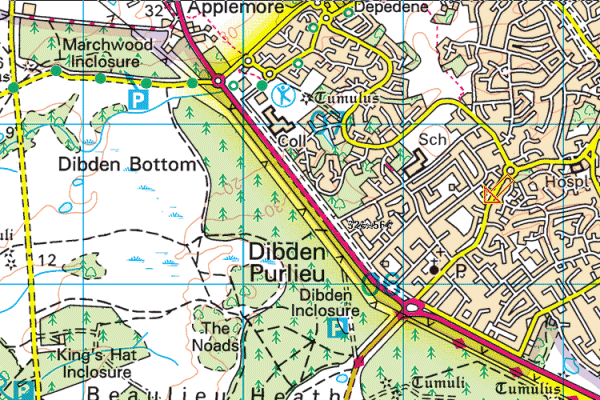

Hampshire Cross-Country League
Dibden Inclosure

View Ordnance Survey map (using Streetmap)
Get directions to Applemore College (using Google Maps)
View Bird's Eye (using Bing Maps)
Course map
Download map showing all courses (PDF)
Maps showing the individual courses will be displayed at the venue on the day
Please note that, apart from on the Under 11 course, the use of spikes is not recommended due to gravel sections.
Fell or trail shoes would be preferable (to spikes). BE PREPARED with suitable footwear.
Our Forestry Commission Permit is dependent upon other Forest users being treated with courtesy. Dibden Inclosure is a very popular area for dog walkers, and ponies and cattle also roam freely through this area.
Parking
WARNING
STRICTLY NO RACE PARKING in the Forest car parks, on the forest road verges, and on Roman Road and Oak Road.
All competitors and spectators MUST cross the busy A326 ONLY at the
pedestrian traffic lights near the Heath roundabout, which are just 50
metres from the assembly area.
All clubs are urged to arrange car sharing wherever possible.
Parking will be available at:
- Applemore College and Applemore Leisure Centre (20 minutes walk from Start): access from Tesco Supermarket roundabout on the A326 - postcode SO45 4RQ
- Noadswood School (12 minutes walk from the Start): access from the Heath Hotel roundabout on the A326 - postcode SO45 4ZF
- Juniors only - Oak Road Car Park (5 minutes walk from the start): access from the Heath Hotel roundabout on the A326.
Parking on Oak Road itself is strictly forbidden as it is very narrow. There is a pedestrian walkway from the south east corner of the car park onto the main road. Runners should use that and NOT walk up or down Oak Road itself.
Note there is no parking time limit for patrons of the Tesco superstore at Applemore. There are also many suitable residential streets in Dibden Purlieu but there is STRICTLY NO PARKING in OAK ROAD or ROMAN ROAD and we ask that runners park sensibly and considerately. A parking map will be sent out closer to the race pointing out the car parks and the COMPULSORY A326 crossing point at the Pegasus traffic lights near The Heath roundabout.
In 2016 we made the same appeals and one selfish runner blocked a private driveway and many parked in Roman Road endangering other runners making their way to and from the race and angering local residents. If this happens in February we will have no choice but to withdraw Dibden Inclosure as a future Hampshire Cross-Country League or Hampshire Athletics venue.
For those of you who ran here in 2016 the Forestry has extended the causeway across Dibden Bottom and unless we have significant rainfall over the next 3 weeks it is unlikely to be a mudbath again. Note that there are several gravel sections, particularly on the longer courses and Harbour Hill hasn't got any lower!
We hope to have a mobile cafe again in the B3054 layby close to the Club tent area. That layby is also the drop off point for Club tents so PLEASE DO NOT PARK in the layby.
Portable toilets will be sited on the gravel track crossing the powerline area.
Important - coaches and minibuses
The organisers would like to know if any clubs are travelling to Dibden in a coach or minibus, as provision for these vehicles to park needs to be made. Would you contact with this information please.
Assembly
Download plan showing assembly areas, location of club tents, etc (PDF)
Club tents (only) can be dropped off in the lay-by adjacent to the Start/Finish area. Access the drop-off point by making a "U-turn" before the cattle grid to the west on the A3054 Beaulieu Road. Please drop off tents before 11:00 if possible, as the mobile coffee van will be using the layby after this time.